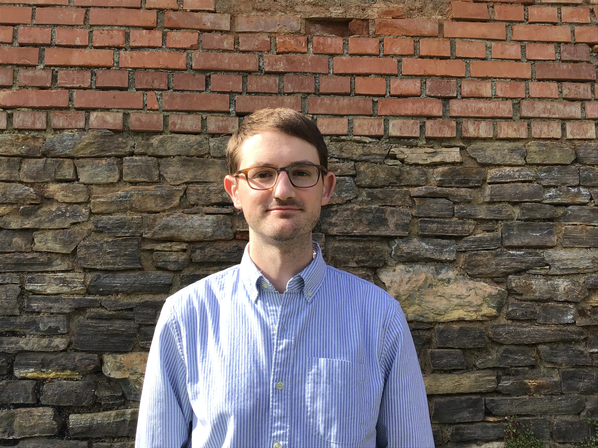

Alexander Rolle

Short biography
Starting in Oct. 2021 I am a TUM Global Postdoc Fellow at
The Technical University of Munich
working with
Ulrich Bauer.
From Sep. 2019 to Sep. 2021 I was a postdoc with
Michael Kerber
at TU Graz, Austria.
In August 2019 I finished a PhD in Mathematics at
The University of Western Ontario, supervised by
Rick Jardine.
Research interests
My main research interests are in applied and computational topology, especially applications to statistics and data analysis.
Publications and preprints
-
A Unified View on the Functorial Nerve Theorem and its Variations, with Ulrich Bauer, Michael Kerber, and Fabian Roll (2022).
arXiv
-
The degree-Rips complexes of an annulus with outliers (2022). To appear at SoCG 2022 (an arXiv version will be available soon).
-
Compression for 2-parameter persistent homology, with Michael Kerber and Ulderico Fugacci (2021).
arXiv
-
Fast minimal presentations of bi-graded persistence modules, with Michael Kerber (2021).
ALENEX 2021. arXiv
-
Multi-parameter hierarchical clustering and beyond (extended abstract) (2020).
Topological Data Analysis and Beyond Workshop at NeurIPS 2020.
Available here
-
Stable and consistent density-based clustering, with Luis Scoccola (2020).
arXiv
-
Torsors over simplicial schemes (2019). PhD thesis. Available
here
-
Central extensions and the classifying spaces of projective linear groups (2018).
arXiv
Software
-
gamma-linkage, with Luis Scoccola.
GitHub
-
mpfree, with Michael Kerber.
Bitbucket
-
A visualization tool for parameter selection when clustering, with Luis Scoccola.
GitHub
Contact information
Postal address:
Department of Mathematics, Technical University of Munich
Boltzmannstraße 3, 85747 Garching b. München, Germany
Email address: alexander dot rolle at tum dot de